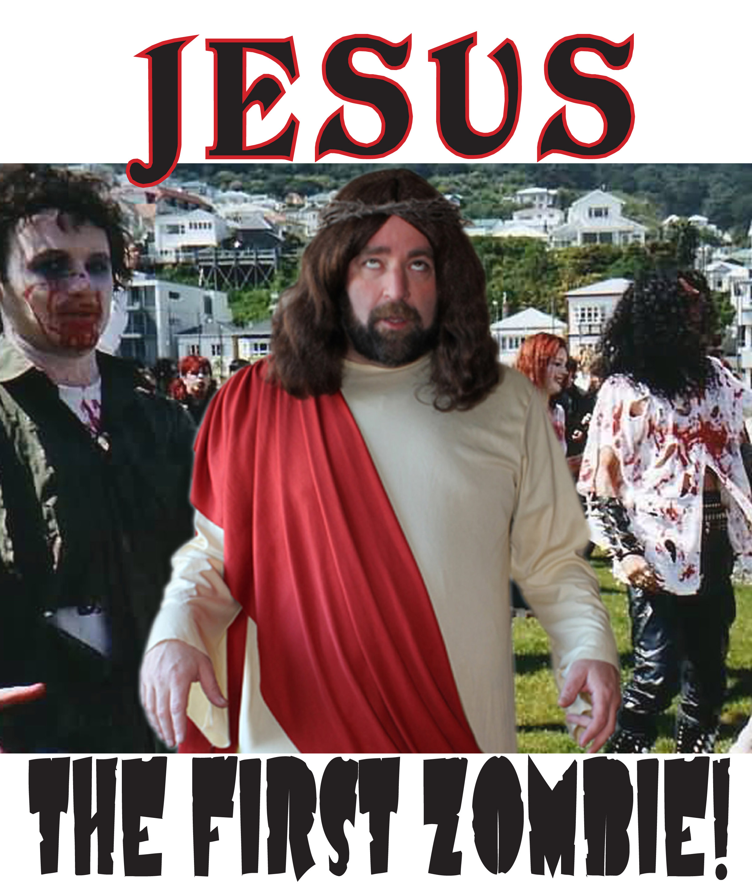

|
|
||
| Established 2014 | "All The News That's The Shit" | Number 69 |
CHRIST RESURRECTED, PLANS WORLD TOUR W. DALI LAMA, DOKKEN
"Dude, Patti Smith never died for MY sins" cracks the savior. "I'm more popular than John Lennon and The Beatles now!" he chortles.
The Christ return - he prefers to be addressed as "The Nazz" - co-ordinates with the just announced first leg of the massive "Monsters Of Peace" tour which also features The Dali Lama and the classic line-up of 80's Hair Metal Stalwarts DOKKEN. It's a massive trek invading mostly the cozier football stadiums and it begins Sep. 9 at the Summer's Eve Disposable Douche Hoosier Dome in Indianapolis.
Also due: Christ's first autobiography - the title of which will be revealed as Christ guests on the "imaginary" talk show "The Mackenzie Dylan Show".
"I get tired of the 'My God can kick your God's ass' so I reached out to 'the Lama' to show that we can co-exist with philosophies that essentially share the same foundation" ponders The Nazz. "And we picked Dokken cuz they rhyme with..Rockin'!" (The Nazz emphasizes this by throwing the horns!)
In conversation, The Nazz tends to move his hands while speaking as if he's conducting some invisible orchestra. He concedes that one motivation to return was the false representation of him, including unauthorized merchandise like the popular "Jesus...The First Zombie" t-shirt.
"We're looking to modernize the Catholic Church and improve marketing. For instance research shows that people HATE the taste of the communication Eucharist "They're dull. Have no flavor, they stick to the roof of my mouth.." Well starting in Oct. We're going to introduce a crispy baked wafer in four delicious flavors: Nacho, Sour Cream & Onion, Barbeque and Cool Ranch! They'll be marketed in Supermarkets as well. We're calling them "Jesus Christ, That's a Great Eucerist!" With the tag line: "Eat Me!"
Christ concedes he wants to see more inclusion in the various denominations and becomes more animated when he declares:
"This insane judgment of people has got to stop. I saw this pasty faced creep on the Demagogue News Network lambasting single parents with this superiority complex. Listen PAL, I have the most famous deadbeat Dad in history! You think I'm cuing up the theme from 'The Courtship Of Eddie's Father' ready to play catch with the old man? PUH-LEEZE!"  Picture of bootleg zombie t-shirt - popular since Christ's resurrection
(The Monsters Of Peace has announced its first leg in the following 12 cities with more to come)
9/9 The Summer's Eve Disposable Douche Hoosier Dome Indianapolis, Ind. 9/10 The Afro Sheen Pontiac Silverdome Pontiac, Mi. 9/12 The George Chuvalo Urinal Cake Skydome Toronto,Ontario,CANADA 9/14 The Zig Zag Cigarette Papers Field Denver, Co. 9/16 The Gabe Kaplan Theatre Bronson, Mo. 9/18 The Swank Magazine Arena Cleveland,Oh. 9/20 The Marcus Bachman Homosexual Reconditioning Center Twins Field Minneapolis, Mn. 9/21 The George (Goober) Lindsay Performing Arts Center St. Louis,Mo. 9/23 The Bozo Theatre in The Round Chicago, ill. 9/24 The Sen. Joseph McCarthy Memorial Stadium Milwaukee, Wisc. 9/26 The Luis Farrakhan Pavilion Phoenix, Az. 9/28 The KY Jelly Anal Lubricant Candlestick Park! San Francisco, Ca.